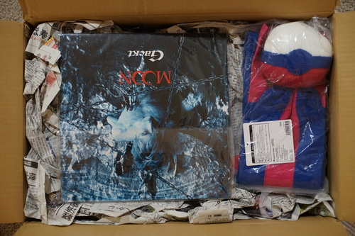

Hello, my dudes and dudettes....
I finally finishing up the struggle of updating to debian 12. It's been a rough journey... I had a lot of trouble getting my firefox ramdisk initialization script to run. I was seeing logs of it existing but when I had terminal access after boot, it was gone. I asked a Linux Expert friend why the heck that would happen. He asked me what output I got from a command, so I turned on my computer and, most embarrassingly, the ramdisk showed up before doing anything.
I got firefox using it, but for some reason if I use rsync and restart my computer, firefox will no longer save tabs and returns to the time I used rsync the first time. Mysteries are still afoot...
I gave up on doing it myself and tried profile-sync-daemon. I really didn't think this needed more than a couple lines of scripting, but I guess I was wrong. At least my SSD isn't being destroyed anymore and my computer is functional...
I modified chiizukeiki and went to go modify the udev rule since the drivers for the joycon changed. I could NOT make a udev rule that would make a symlink for the joycon! I was so frustrated! After a few days of trying, I noticed udevadm test wasn't looking at the file I made. I mistyped my instructions to myself and created the file in the wrong folder. ;_; chiizukeiki should be good enough to use with my tablet now. I'm not sure it'll be a useful program to anyone else due to drivers possibly differing between distros. There's a few messy things in the code I'd like to clean up. It's lagging unlike the previous iteration and needs a couple more bugs removed that appeared.

I accidentally clicked on Suruga-ya the other day and found they were doing another free shipping event. It seems like they do they pretty often, but I really felt the need to order!!! I went a little nuts.
There were a few things that I wasn't sure was going to be worth buying, but they were really pretty cheap with the exchange rate, so I took the risk. I'll give you a rating on them! I also grabbed some Western CDs that are a little difficult to find in a thrift store. And some Gackt CDs. Couldn't afford to stock up on Malice Mizer, as much as I wanted to.
Shipping was fast. Box is big. Verona for scale. Ordered May 28th, arrived June 5th. 1 USD = 150.28 JPY was the Paypal exchange rate that day, for reference. The entire order came out cents below $200 USD. I managed to make an account under my email with a typo and couldn't access the order info. Suruga-ya did not help with this when I asked and their contact page is broken and can't accept newlines. Customer service mess. Luckily an order list came in the box, so I was able to confirm everything I ordered was included.
I opened it up to "oh my god I have made such a mistake!!!" What will my mother think of me?! Someone so anti vinyl.... buying a record.... I can't believe I've done this!!!
In order of my invoice:
I'm laughing at how hard I messed this up. What do I do with a record?!?! Rating: HELP
Hardcover with dust jacket. Full color illustrations. Rating: VERY GOOD BUY
Same as above. Rating: CAN I BUY BOOK 3?? WHERE IS BOOK 3
I've had this in my amazon wishlist since 8/8/2019 and have been waiting for Dark Horse to release this in the US. Rating: great!! Can't read the silly interviews though.
I bought this because I had one of Yana Toboso's Black Butler illustration books in my cart and someone bought it and I was upset. Black and white printing, staple binding. This one is basically a coloring book (don't color it!!!) Rating: OK
I still have to look closer, but it doesn't look used.
Ryan said he'd still talk to me if I wore this. Still in plastic package with tag, unlike the sales photos showed.
2 sheets of paper stapled together. Includes all the dolls released on this 2017 cruise in print. Rating: You'd better be RG William's biggest fan to pay for this. Bad buy.
I can't read it, but boys kiss and Rei is naked. Glued binding. Some color pages inside. Rating: OK
This is the one with Ritsuka and Soubi on the cover. Line art and sketches inside. Black and white printing. Rating: good
This is the line art cover one with only Ritsuka. 2 sheets of paper stapled. Black and white printing. 200円 would have been an appropriate price. Rating: bad
1 outfit pattern for SD with 2 different stylings. Bloomers, blouse, JSK, and half bonnet. Patterns are in the pages and need to be scaled up 200%. You'll break the binding if you scan it! Black and white printing, glued binding. Rating: good
They don't tell you about this until you check out. Rating: rude.
Between my computer struggles and boy drawings, I made Hina a dress for Gingham Girl Summer. I don't think I own any gingham for myself. It's such a cute pattern, but I only see it rarely in vintage clothes.

My buddy Flan asked me what burando I wanted from Laforet. As usual, I have no ability to make any decision, but I found out about gouk雅. I love wa lolita!!! So cute~~ Wait are there any cowboy lolitas yet?? Looking at Wunderwelt makes me want to throw away all my boring clothes and just wear cute ones. Maybe next life I can be cute!
I was at the used bookstore with Ryan and found a Matsuri Hino one shot manga. I don't like her writing, so I didn't buy it, but there was a second one shot at the end of the book called "Spring Cherry Blossoms A Small Incident at Sakuradaya, Meiji Era". The main man is a KIMONO COWBOY. I can't believe my eyes!!! The world is blessed.
Finally, a tiny thrift haul.
Wanted to try this with my cintiq 16. Not sure if I like it more than the wooden one I was using.